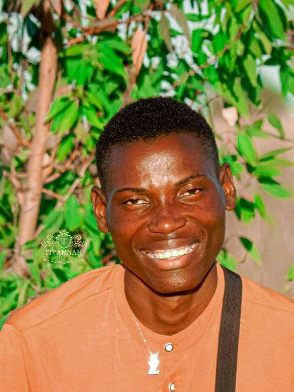

A career built around people, ideas & impact.
I am Mubita Siasabuzingo Kabika — an educator, journalist, media professional, youth advocate, community development supporter and creative storyteller committed to using my skills to inform, empower and create opportunities for others.

People, places & moments.
A selection of moments from my professional, media, community and public engagements.





Different fields. One purpose.
My professional journey has developed across education, journalism, media, youth development, community engagement and creative production.
These areas may appear different, but they are connected by one central purpose: using knowledge, communication, creativity and leadership to make a positive contribution to individuals and communities.
From teaching and reporting to working with young people, supporting community groups and developing films, I continually look for ways to turn ideas into practical opportunities and meaningful results.
Select any area below to explore more about my experience, work and contribution.
What I Do
Explore the different areas of my professional and community work. Click a card to view the full profile.
EDUCATOR
Teaching • ICT • Skills Development
Journalist & Editor
Reporting • Interviews • Storytelling
MEDIA PROFESSIONAL
Media Production • Field Coverage • Public Communication
YOUTH ADVOCATE
Youth Empowerment • Leadership • Mobilisation
COMMUNITY IMPACT
Community Groups • Cooperatives • Development Support
CREATIVE & FILM PRODUCTION
Screenwriting • Directing • Storytelling
EDUCATOR
My work in education focuses on helping learners develop practical knowledge, digital skills and the confidence to apply what they learn in real-world situations.
Areas of Work
- ICT and computer studies
- Practical computer training
- Skills development
- Digital literacy
- Lesson planning and assessment
- Student mentorship
- Practical and project-based learning
- Youth skills development
I believe education should go beyond theory. Learners should gain practical skills that can help them continue learning, solve problems and create opportunities for themselves.
JOURNALIST & EDITOR
My journalism work involves gathering information, conducting interviews, reporting community issues and transforming information into clear, accurate and engaging stories.
Areas of Work
- News reporting
- Community journalism
- Interviews
- Field reporting
- Feature stories
- Story research and verification
- News writing and editing
- Public-interest reporting
I am particularly interested in stories that give communities a voice and bring attention to issues, people and developments that deserve public attention.
MEDIA PROFESSIONAL
My media experience extends beyond traditional journalism into field production, interviews, live coverage and digital media.
I work with media as a tool for informing audiences and connecting communities with important information.
Areas of Work
- Field media coverage
- Television and digital media production
- Live event coverage
- Interviews and public discussions
- Community storytelling
- Media coordination
- Digital content production
- Public communication
Through my involvement in media projects, including work with South Media Trends TV, I continue to explore how local media can inform, document and amplify community voices.
YOUTH ADVOCATE
My work as a Youth Advocate is centred on empowering young people to recognise their potential, make positive choices and take an active role in the development of their communities.
I have participated in and supported various youth-focused initiatives, working with youth development organisations and community groups on projects aimed at promoting youth participation, leadership, creativity, skills development and positive social engagement.
I have also been involved in initiatives that bring young people together, create opportunities for them to express their talents and encourage constructive alternatives to challenges such as drug and substance abuse, unemployment and social exclusion.
Tivannah Innovations Youth Organization
In 2021, I founded Tivannah Innovations Youth Organization, which was formally registered in 2022. The organisation provides a platform for young people to come together, develop their abilities, explore creative opportunities and contribute positively to their communities.
I believe youth advocacy is not simply about speaking on behalf of young people. It is about creating opportunities, connecting young people to resources and opportunities, encouraging leadership, listening to their ideas and helping them become active participants in shaping their communities.
COMMUNITY IMPACT
My community development work focuses on helping individuals and groups organise themselves, access opportunities and build initiatives that can contribute to the social and economic development of their communities.
I have supported community members and young people in forming and strengthening youth clubs, women's groups, community organisations, cooperatives and other local initiatives.
Community Support
- Formation of youth clubs
- Formation of women's groups
- Formation of cooperatives
- Community organisation and mobilisation
- Guidance on organisational registration
- Project development support
- Funding application guidance
- Identification of development opportunities
- Support with CDF-related applications
- Youth and women's empowerment initiatives
I also assist emerging groups with understanding the process of formalising and registering their organisations, including guidance on documentation and requirements needed to establish credible community-based groups.
Where opportunities are available, I help communities identify potential sources of support and navigate application processes for programmes such as Constituency Development Fund (CDF) opportunities, community grants and other development initiatives.
My goal is not simply to help people access opportunities, but to help them develop the organisation, confidence and capacity needed to create opportunities within their own communities.
CREATIVE & FILM PRODUCTION
Through Tivannah Innovations Youth Organization, I have used film, storytelling and creative arts as platforms for youth participation, talent development and social awareness.
My filmmaking journey has involved writing and developing stories that explore real-life social issues, relationships, faith, family and the experiences of people whose voices are often overlooked.
I have written and directed several productions, working with young people both in front of and behind the camera and creating opportunities for emerging actors and creatives to develop their talents.
Selected Filmography
These productions reflect my interest in using storytelling to address social issues and create meaningful conversations within communities.
Several completed productions are available through the Tivannah Innovations Youth Organization YouTube channel, providing an accessible record of the organisation's creative work and its contribution to youth-focused storytelling.
For me, filmmaking is more than entertainment. It is a tool for communication, education, awareness and social change, while also creating a space where young people can develop their creativity and tell stories that matter.